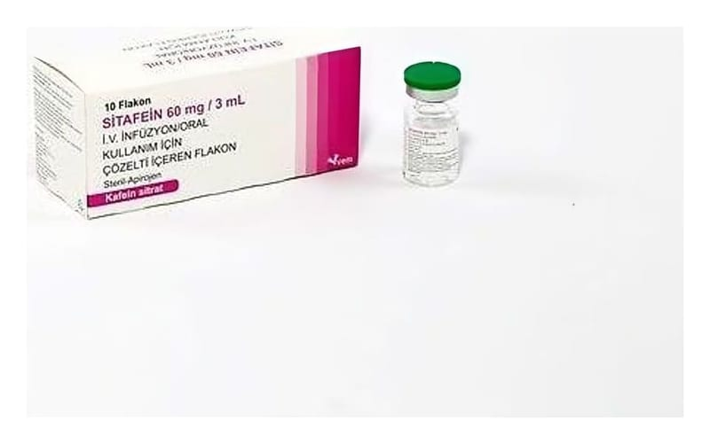

Sitafein 60 mg / 3 ml IV İnfüzyon/Oral Kullanim İçin Çözelti İçeren Flakon, 10 Adet

Ne için kullanılır
KT · Bölüm 1SİTAFEİN metilksantin olarak isimlendirilen bir ilaç grubuna ait merkezi sinir sistemi uyarıcısıdır. SİTAFEİN, gestasyon yaşı (annenin son adetinin ilk gününden doğuma kadar geçen süre) 28 ila <33 hafta arasında olan bebeklerdeki prematüre apnesinin (solunum durması) kısa vadeli tedavisinde kullanılmaktadır.
Bu kısa süreli nefes kesilme periyotları, bebeğin nefes alma merkezinin tam olarak gelişmemesinden kaynaklanır. Her bir kutuda 10 adet 5 ml kapasiteli, 3 ml çözelti içeren tip I renksiz cam flakon bulunmaktadır.